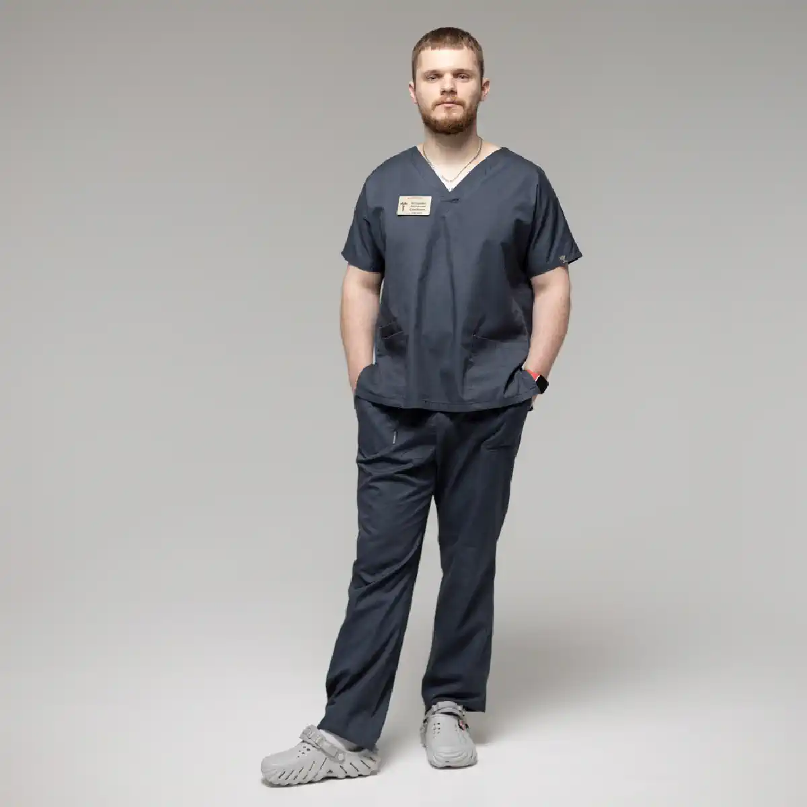

+38(068)
79 72 782
+38(068)
79 72 782Лечение алкоголизма у военных
Путь к восстановлению и трезвости


Бесплатная консультация, работаем круглосуточно 24/7
Путь к восстановлению и трезвости

Дата написания: Обновляется...
Последнее обновление: Обновляется...
Лечение алкоголизма у военных — это комплексная медицинская и психологическая помощь, направленная на восстановление физического состояния, снижение тяги к алкоголю и возвращение человека к стабильной трезвой жизни. У военнослужащих алкогольная зависимость часто развивается не только из-за привычки к спиртному, но и на фоне сильного стресса, эмоционального истощения, тревожности, нарушений сна, пережитых травматических событий и длительного внутреннего напряжения. Военные часто сталкиваются с повышенной психологической нагрузкой, ответственностью, стрессовыми ситуациями, разлукой с близкими и постоянной необходимостью сохранять контроль над собой. На этом фоне алкоголь может восприниматься как быстрый способ расслабиться, снять тревогу, приглушить воспоминания, облегчить засыпание или временно забыть о пережитом. Однако такой способ «разрядки» не решает проблему, а со временем может привести к формированию устойчивой зависимости.
Опасность заключается в том, что употребление алкоголя постепенно перестаёт быть редким эпизодом и становится привычным способом справляться с напряжением. Человеку может становиться всё сложнее расслабиться, уснуть или успокоиться без спиртного. Увеличивается доза, появляются запои, раздражительность, тревожность, ухудшается самочувствие и снижается способность контролировать употребление.
В такой ситуации важно не обвинять военнослужащего и не воспринимать зависимость как слабость характера. Алкоголизм — это заболевание, которое требует профессионального подхода, особенно если оно связано со стрессом, психологической травмой, тревожными состояниями или нарушением сна. Поддержка должна быть спокойной, уважительной и направленной на то, чтобы человек как можно раньше получил помощь. Лечение алкоголизма у военных может включать консультацию нарколога, детоксикацию, медикаментозную поддержку, кодирование, психотерапию, работу с тревожностью и ПТСР, а также дальнейшую реабилитацию.
Алкогольная зависимость у военных имеет свои особенности. Она часто формируется не только из-за привычки к спиртному, но и как реакция на постоянный стресс, тревогу, эмоциональное перенапряжение, тяжёлые переживания и длительное нахождение в условиях повышенной ответственности. Военнослужащие могут сталкиваться с ситуациями, которые сильно влияют на психику, нарушают сон, усиливают внутреннее напряжение и постепенно истощают эмоциональные ресурсы.
В таких условиях алкоголь может восприниматься как быстрый способ расслабиться, временно снизить тревожность, приглушить воспоминания или облегчить засыпание. Однако со временем употребление перестаёт быть редким способом «снять напряжение» и может становиться устойчивой привычкой. Человеку становится всё сложнее отдыхать, успокаиваться и восстанавливаться без спиртного, а дозы алкоголя постепенно увеличиваются.
Военнослужащие могут долго скрывать проблему, не обращаться за помощью и считать, что должны справиться самостоятельно. Многие привыкли терпеть физический и психологический дискомфорт, не показывать слабость и не говорить о переживаниях. Из-за этого зависимость может долго оставаться незамеченной для окружающих. Человек продолжает выполнять обязанности, но постепенно теряет контроль над количеством алкоголя, чаще употребляет в одиночестве, становится раздражительным, хуже спит и труднее восстанавливается после нагрузок. Дополнительную сложность создаёт то, что алкогольная зависимость у военных нередко сочетается с тревожностью, эмоциональным выгоранием, агрессивностью, чувством вины, подавленностью или последствиями травматического опыта. Внешне человек может выглядеть собранным и сильным, но внутри испытывать постоянное напряжение, которое пытается заглушить спиртным.
Симптомы алкоголизма могут проявляться постепенно, поэтому на ранних этапах проблему не всегда легко заметить. Сначала человек может употреблять алкоголь после службы, сильного стресса, тяжёлого дня или эмоционального напряжения, воспринимая спиртное как способ расслабиться и временно переключиться. Однако со временем употребление может становиться более частым, дозы увеличиваются, а без алкоголя становится сложнее успокоиться, уснуть или снять внутреннее напряжение.
Одним из главных признаков зависимости является потеря контроля над количеством выпитого. Человек может планировать выпить немного, но в итоге употребляет больше, чем собирался. Постепенно алкоголь начинает занимать всё больше места в жизни: появляются поводы для употребления, желание выпить после любой стрессовой ситуации, а периоды трезвости становятся короче. К тревожным симптомам относятся регулярное употребление, похмелье, раздражительность, агрессивность, нарушение сна, тревожность, тремор, слабость, снижение концентрации внимания и ухудшение общего самочувствия. Также могут появляться перепады настроения, апатия, вспыльчивость, проблемы с памятью, снижение работоспособности и трудности в общении с близкими.
Часто человек отрицает наличие проблемы, скрывает употребление, оправдывает алкоголь стрессом или усталостью, обещает прекратить, но снова возвращается к спиртному. У военных это может быть особенно выражено, потому что многие привыкли держать переживания внутри и не обращаться за помощью до тех пор, пока состояние не становится тяжёлым. Если употребление алкоголя начинает влиять на здоровье, отношения, поведение, службу, сон, эмоциональное состояние или способность принимать решения, это серьёзный повод обратиться за профессиональной помощью. Чем раньше начато лечение, тем выше шанс стабилизировать состояние, снизить тягу к алкоголю и предотвратить развитие тяжёлой зависимости.
У военных алкоголь часто становится способом временно справиться со стрессом, тревогой, внутренним напряжением и эмоциональной перегрузкой. После тяжёлых событий, длительного напряжения, нарушения сна или постоянной ответственности спиртное может восприниматься как быстрый способ расслабиться, «отключить» мысли и на короткое время почувствовать облегчение. После употребления человеку может казаться, что тревога уменьшается, тело расслабляется, мысли становятся спокойнее, а сон приходит быстрее. Однако такой эффект является кратковременным и обманчивым. Алкоголь не восстанавливает нервную систему, не решает внутренние переживания и не помогает по-настоящему справиться со стрессом. Наоборот, после протрезвления тревога может возвращаться с большей силой, ухудшается настроение, появляется раздражительность, слабость, чувство вины, разбитость и эмоциональная нестабильность.
Регулярное употребление спиртного усиливает нагрузку на нервную систему, нарушает качество сна и мешает полноценному восстановлению организма. Даже если человек быстрее засыпает после алкоголя, сон становится менее глубоким и менее восстановительным. В результате на следующий день могут сохраняться усталость, тревожность, сниженная концентрация внимания и раздражительность. Чем чаще военнослужащий использует алкоголь как способ «выключиться», тем выше риск формирования зависимости. Постепенно психика привыкает к тому, что любое напряжение снимается спиртным, и человеку становится всё сложнее справляться со стрессом без алкоголя. В таких случаях употребление может становиться не редким эпизодом, а устойчивым механизмом ухода от переживаний.
Алкоголь не устраняет причину стресса. Он только временно притупляет тревогу, боль, воспоминания или внутреннее напряжение, а затем может усилить проблему. Поэтому при тревожности, бессоннице, панических состояниях, навязчивых воспоминаниях, раздражительности или постоянном чувстве внутренней угрозы военному нужна не только наркологическая, но и психологическая помощь. Комплексный подход помогает безопасно снизить тягу к алкоголю, стабилизировать состояние, восстановить сон и научиться справляться со стрессом без спиртного. Работа с наркологом, психологом или психотерапевтом позволяет не просто отказаться от алкоголя, а постепенно восстановить эмоциональную устойчивость и вернуть контроль над своим состоянием.
Алкоголизм негативно влияет на физическое и психическое здоровье человека. Регулярное употребление спиртного повышает нагрузку на печень, сердце, сосуды, нервную систему, желудочно-кишечный тракт и весь организм в целом. Со временем у человека могут появляться слабость, скачки артериального давления, головные боли, нарушение сна, проблемы с памятью, раздражительность, тревожность, снижение концентрации внимания и ухудшение работоспособности.
Для военнослужащего алкогольная зависимость особенно опасна, потому что она напрямую влияет на способность сохранять ясность мышления, быстро реагировать, принимать решения и контролировать эмоции. Даже если человек продолжает выполнять свои обязанности, регулярное употребление алкоголя постепенно снижает выносливость, ухудшает восстановление после нагрузок, усиливает утомляемость и делает психику более нестабильной.
Алкоголь также может усиливать тревожность, раздражительность, агрессивность и нарушения сна. После кратковременного облегчения состояние часто становится хуже: появляется эмоциональная нестабильность, чувство разбитости, внутреннее напряжение и желание снова выпить, чтобы временно облегчить симптомы. Так формируется замкнутый круг, при котором алкоголь становится не способом отдыха, а причиной дальнейшего ухудшения состояния. Для службы зависимость может создавать серьёзные риски. Ухудшение внимания, замедленная реакция, импульсивность, проблемы с самоконтролем и снижение ответственности могут быть опасны не только для самого военнослужащего, но и для окружающих. Именно поэтому важно не ждать, пока ситуация станет критической, а обращаться за помощью при первых признаках потери контроля над употреблением.
Помощь нарколога военному нужна в тех случаях, когда человек уже не может самостоятельно контролировать употребление алкоголя, регулярно срывается, уходит в запои или тяжело переносит отказ от спиртного. Если после прекращения употребления появляются выраженная слабость, тревога, бессонница, тремор, тошнота, рвота, скачки давления, учащённое сердцебиение или раздражительность, это может указывать на абстинентное состояние и требует медицинской оценки.
Обратиться к наркологу стоит не только при тяжёлом запое, но и тогда, когда алкоголь начинает становиться способом справляться со стрессом, тревогой, усталостью или внутренним напряжением. Если военнослужащий пьёт, чтобы уснуть, успокоиться, забыть пережитое или временно «выключиться», это может быть ранним признаком формирования зависимости. В такой ситуации важно не ждать ухудшения, а вовремя получить консультацию специалиста.
Также тревожными признаками являются скрытое употребление, потеря контроля над дозой, частые обещания прекратить пить и повторные срывы. Человек может отрицать проблему, объяснять употребление усталостью или стрессом, но при этом продолжать пить несмотря на ухудшение здоровья, конфликты с близкими, проблемы со сном, поведением или службой. Чем дольше откладывается обращение за помощью, тем выше риск перехода зависимости в более тяжёлую форму. Нарколог помогает оценить состояние пациента, определить степень интоксикации или абстинентного синдрома, подобрать безопасную тактику лечения и снизить риск осложнений. При необходимости врач может провести детоксикацию, назначить медикаментозную поддержку, помочь стабилизировать давление, сон, нервную систему и общее самочувствие.
Детоксикация от алкоголя для военных проводится при алкогольной интоксикации, похмельном синдроме, запое или выраженном ухудшении самочувствия после употребления спиртного. Такая помощь особенно важна, если у человека появляются сильная слабость, тошнота, рвота, тремор, тревожность, бессонница, учащённое сердцебиение, скачки давления или общее истощение организма.
Основная задача детоксикации — снизить токсическую нагрузку на организм и помочь безопасно стабилизировать состояние пациента. Алкоголь и продукты его распада негативно влияют на печень, сердце, сосуды, нервную систему и водно-солевой баланс. Поэтому при выраженной интоксикации человеку может быть сложно восстановиться самостоятельно, особенно если употребление продолжалось несколько дней или сопровождалось сильным стрессом.
Процедура проводится только после осмотра врача-нарколога. Специалист оценивает состояние пациента, длительность употребления алкоголя, давление, пульс, жалобы, наличие хронических заболеваний, уровень тревожности, качество сна и возможные риски. Такой подход позволяет подобрать индивидуальную схему помощи с учётом состояния организма и избежать лишней нагрузки. Детоксикация может помогать уменьшить тошноту, слабость, головную боль, тревожность, дрожь в теле, обезвоживание и общее недомогание. Также она направлена на восстановление водно-солевого баланса, поддержку нервной системы и стабилизацию работы внутренних органов. После процедуры пациенту становится легче физически, снижается выраженность интоксикации и появляется возможность перейти к дальнейшему лечению.
Стоимость капельницы от алкоголя начинается от 2199 грн.
| Популярные услуги | Цена |
|---|---|
| Консультация нарколога | От 1500 грн |
| Капельница от алкоголя | От 2199 грн |
| Вывод из запоя на дому | От 2199 грн |
| Кодирование от алкоголизма | От 6000 грн |
Выведение из запоя у военных требуется в тех случаях, когда человек несколько дней употребляет алкоголь и уже не может самостоятельно остановиться. Такое состояние сопровождается выраженной интоксикацией, истощением организма и нарушением работы нервной системы. У военнослужащих запой часто развивается на фоне сильного стресса, эмоционального перенапряжения, тревожности, нарушений сна или попыток «заглушить» тяжёлые переживания спиртным.
Запой опасен тем, что с каждым днём состояние человека может ухудшаться. Появляются сильная слабость, тремор, потливость, тошнота, рвота, головная боль, раздражительность, тревожность, бессонница, скачки артериального давления и учащённое сердцебиение. В некоторых случаях могут возникать спутанность сознания, панические состояния, агрессия, выраженное беспокойство или резкое ухудшение общего самочувствия. Врач-нарколог проводит осмотр, оценивает тяжесть состояния, длительность запоя, уровень интоксикации, давление, пульс, жалобы, наличие хронических заболеваний и возможные риски. После этого специалист подбирает индивидуальную схему лечения, которая помогает безопасно вывести человека из острого состояния и снизить нагрузку на организм.
Помощь при запое может включать инфузионную терапию, препараты для стабилизации давления, уменьшения тревожности, восстановления сна, поддержки сердца, печени, нервной системы и водно-солевого баланса. Главная цель лечения — облегчить симптомы интоксикации, стабилизировать самочувствие и снизить риск осложнений, которые могут возникнуть при резком прекращении употребления алкоголя без медицинского контроля.
Для военных выведение из запоя особенно важно проводить аккуратно и комплексно, потому что употребление алкоголя нередко связано не только с физической зависимостью, но и с психологическим напряжением. Если человек пьёт на фоне тревоги, бессонницы, эмоционального истощения или травматического опыта, после снятия острого состояния ему может понадобиться дополнительная помощь психолога или психотерапевта. После выведения из запоя важно не останавливаться только на детоксикации. Капельница и медикаментозная поддержка помогают восстановить физическое состояние, но не устраняют причины зависимости. Если не работать с тягой к алкоголю, стрессом, нарушениями сна и психологическими триггерами, риск повторного употребления сохраняется.
Медикаментозное лечение алкоголизма у военнослужащих может применяться для снижения тяги к алкоголю, стабилизации нервной системы, восстановления сна, уменьшения тревожности и профилактики срыва. Подбор препаратов проводится только врачом после оценки состояния пациента. Медикаменты могут быть частью комплексного лечения, но они не заменяют психотерапию и реабилитацию. Алкогольная зависимость затрагивает не только тело, но и психику, привычки, окружение, реакции на стресс и внутренние переживания. Поэтому лечение должно быть комплексным. Врач может рекомендовать медикаментозную поддержку после детоксикации, при выраженной тяге, тревожности, нарушениях сна или высоком риске повторного употребления. Важно соблюдать назначения специалиста и не принимать препараты самостоятельно.
Кодирование от алкоголизма для военнослужащих — это метод поддержки трезвости, который помогает снизить риск употребления спиртного на определённый срок. Кодирование может применяться после детоксикации и стабилизации состояния, когда человек находится в трезвом состоянии и осознанно согласен на процедуру. Перед кодированием врач проводит консультацию, оценивает здоровье пациента, наличие противопоказаний, уровень мотивации и срок воздержания от алкоголя. Важно, чтобы военнослужащий понимал суть метода, возможные ограничения и необходимость полного отказа от спиртного. Кодирование помогает создать барьер перед употреблением, но не устраняет психологические причины зависимости. Поэтому для устойчивого результата его желательно сочетать с психотерапией, консультациями нарколога и изменением образа жизни.
Психологическая помощь военным при алкогольной зависимости является важной частью лечения. Употребление алкоголя часто связано с внутренним напряжением, тревогой, стрессом, пережитыми событиями, чувством вины, раздражительностью или эмоциональным истощением. Без работы с этими причинами риск срыва может сохраняться даже после детоксикации или кодирования. Психолог помогает человеку понять, какие ситуации провоцируют желание выпить, как справляться с тревогой, как контролировать эмоции и как постепенно возвращаться к нормальной жизни без алкоголя. Во время терапии пациент учится распознавать триггеры, выстраивать новые привычки и находить безопасные способы восстановления. Особенно важна психологическая поддержка для тех, кто привык не говорить о своих переживаниях и держать всё внутри. Работа со специалистом помогает снизить внутреннее напряжение и укрепить мотивацию к трезвости.
Работа с ПТСР, тревожностью и алкогольной зависимостью требует комплексного подхода. Если у военнослужащего есть навязчивые воспоминания, нарушения сна, раздражительность, вспышки агрессии, эмоциональная отстранённость, панические состояния или постоянное чувство угрозы, алкоголь может стать способом временно приглушить эти симптомы. Однако употребление спиртного не лечит ПТСР и тревожность. Наоборот, со временем алкоголь может усиливать нестабильность нервной системы, ухудшать сон, повышать уровень тревоги и провоцировать повторные срывы. Поэтому важно работать одновременно с зависимостью и психологическими последствиями пережитого стресса. Помощь может включать консультации психолога, психотерапевта, нарколога, медикаментозную поддержку и реабилитацию. Такой подход помогает не только отказаться от алкоголя, но и постепенно восстановить эмоциональную устойчивость.
Реабилитация военных после лечения алкоголизма помогает закрепить результат и снизить риск повторного употребления. После детоксикации, кодирования или медикаментозной терапии человеку важно восстановить режим дня, сон, питание, физическое состояние и психологическое равновесие. Реабилитация может включать индивидуальную психотерапию, работу с мотивацией, поддержку семьи, профилактику срыва, обучение навыкам управления стрессом и постепенное возвращение к стабильной повседневной жизни. Важно, чтобы человек не оставался один на один с проблемой после снятия острого состояния. Поддержка близких играет большую роль. Родным важно не давить, не обвинять и не провоцировать конфликты, а помогать человеку сохранять трезвость, спокойствие и веру в восстановление. Чем более комплексным будет подход, тем выше шанс на долгосрочный результат.
Круглосуточная помощь нарколога для военных необходима в ситуациях, когда состояние ухудшается внезапно: при запое, алкогольной интоксикации, абстинентном синдроме, сильной тревоге, бессоннице, треморе, рвоте, слабости, скачках давления или невозможности самостоятельно прекратить употребление.
Нарколог может оценить состояние пациента, объяснить возможные варианты помощи, провести детоксикацию, стабилизировать самочувствие и подсказать дальнейший план лечения. Своевременное обращение помогает снизить риск осложнений и начать восстановление безопасно. Лечение алкоголизма у военных должно быть внимательным, конфиденциальным и комплексным. Важно учитывать не только факт употребления алкоголя, но и причины, которые привели к зависимости: стресс, тревогу, травматический опыт, нарушения сна и эмоциональное истощение. Профессиональная помощь помогает человеку восстановить контроль над жизнью и постепенно вернуться к трезвости.
Телефон для консультации и вызова нарколога: +38(050-021-69-57)

Статья проверена экспертом
Могучев Станислав
Врач терапевт, ординатор
Возможно интересная статья:
Янтарная кислота, Бетаргин и Энтеросгель при алкогольной интоксикации

Да, мы строго соблюдаем полную конфиденциальность на всех этапах лечения. Информация о пациенте, диагнозе и прохождении терапии не передаётся третьим лицам. Обращение к нам не влечёт постановку на учёт. Вы можете быть уверены в безопасности и анонимности.
Программа лечения разрабатывается индивидуально после консультации со специалистом. Учитываются вид зависимости, её длительность, физическое и психологическое состояние пациента. Такой подход позволяет повысить эффективность терапии и снизить риск срыва. Мы не используем шаблонные решения.
Да, мы сопровождаем пациентов и после основного курса лечения. Проводятся консультации, рекомендации по адаптации и профилактике рецидивов. При необходимости возможна дальнейшая психологическая поддержка. Это помогает сохранить результат и вернуться к полноценной жизни.
Анонимно

Никакими усилиями самостоятельно я не смогла преодолеть запой, и наступала ломка, сопровождаемая повышенным давлением и пульсом. Тогда я решила обратиться за помощью в клинику. Врачи оказали мне неоценимую поддержку! Уже прошел месяц, и я не только не употребляю алкоголь, но даже не испытываю к нему желания!
Анонимно
Могу с уверенностью порекомендовать данный центр для тех, кто ищет помощь при выводе из запоя. Я неоднократно обращался к ним и могу сказать, что цена соответствует качеству услуг. После проведения капельницы в клинике, вся тяга к алкоголю проходит, и я чувствую себя гораздо лучше. Это действительно эффективный метод, и я благодарен клинике за их профессионализм и заботу!
Анонимно
Неоднократно я пытался бросить алкоголь самостоятельно, но каждый раз уговаривал себя продолжать. Я сначала ограничивался одной бутылкой в день, потом двумя, и в итоге вновь попадал в запой. Но в итоге, я смог прекратить употребление алкоголя только после того, как обратился в центр Амбрелла и заказал у них услугу вывода из запоя. Уже не пью 3 месяца и удалось полностью восстановиться. Благодарю врача который меня вел - Алексея Валерьевича.
Анонимно
Здравствуйте! Я хотел бы выразить свою искреннюю благодарность клинике за быстрое и профессиональное освобождение моего мужа пивного рабства! Ранее у меня уже не было никаких надежд на его выздоровление. Однако, благодаря вашим перспективным методам лечения, мы теперь идем к полному отказу от алкоголя. Вы дали нам новую надежду и оказали неоценимую помощь! Спасибо вам за все!
Анонимно
Я долгое время страдал от запоев и не мог справиться с этой проблемой. Однако, когда я обратился в этот центр, они быстро помогли мне вернуться на ноги, и самое главное - предоставили мне возможность не возвращаться к запоям. Уже почти полгода я не испытываю запоев! Это для меня настоящее чудо, я никогда не думал, что смогу так преодолеть свои проблемы. Большое спасибо центру Амбрелла!
Анонимно
Благодарю ваш центр Амбрелла за оперативное и высококачественное лечение! Женский алкоголизм - это настоящее горе, с которым невозможно справиться в одиночку. Я уже потеряла надежду, но благодаря вашей помощи, она вернулась ко мне! Отдельная благодарность врачу Станиславу Вячеславовичу, а также благодарность Богу за то, что он послал мне такое чудо как ваша центр! Спасибо вам всем!
Анонимно
Хочу выразить благодарность врачу Владиславу Алексеевичу за то, что вы избавили меня от этого ужаса. Я уже был в отчаянии, перепробовал множество клиник и центров, но только здесь я наконец получил настоящую помощь! Алкоголь полностью разрушил меня, и если бы не ваша помощь, я, возможно, уже не был бы жив. С вами я смог вернуть себе жизнь и буду благодарен вам всегда!
Номер телефона:
+380 (68) 797 27 82
+380 (50) 021 69 57
Адрес наркологического центра вашего города уточняйте по
телефону
Работаем в: Киеве, Одессе, Львове, Харькове, Днепре,
Запорожье, Черкассах, Чугуеве, Черноморске, Каменском
Telegram: t.me/umbrellaplus
График работы: Круглосуточно